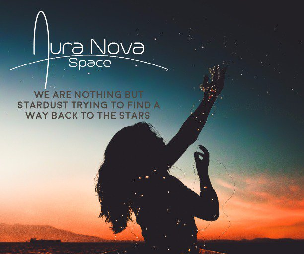

Space Funerals, Space Memorials. At Auro Nova Space we understand the loss of a loved one and the need to feel close to those that have departed before us. We work alongside other business to provide a bespoke out of this world experience to honor and remember, those who have touched our lives. With the eternal night sky all around us, we will send a symbolic portion of their cremated remains or lock of hair, on a rocket bond for space. Where they will remain in orbit for up to two years. You will be able to track there movements over the horizon. Eventually the satellite will re enter our earths atmosphere and burn up in final shooting star. Commemorating your loved ones for ever, whilst your looking up to a familiar and timeless sky. You will also have a beautiful token keeping them close to your heart forever.